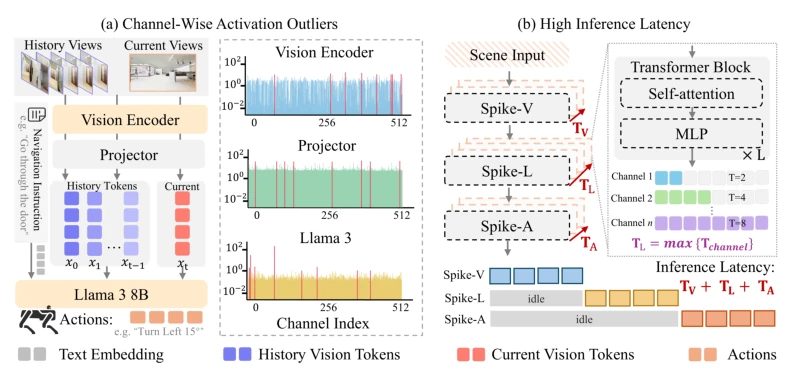
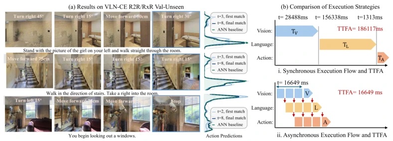
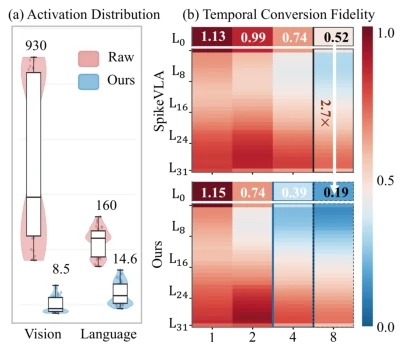
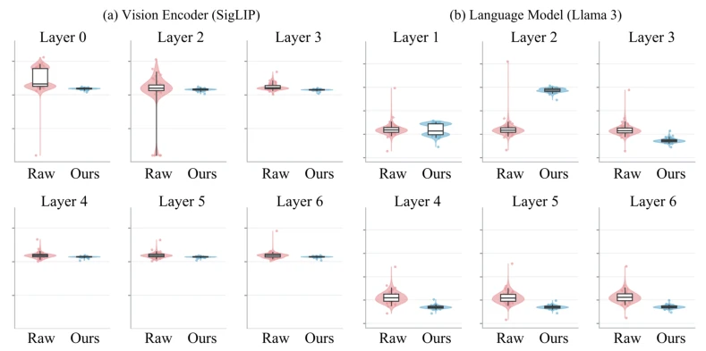
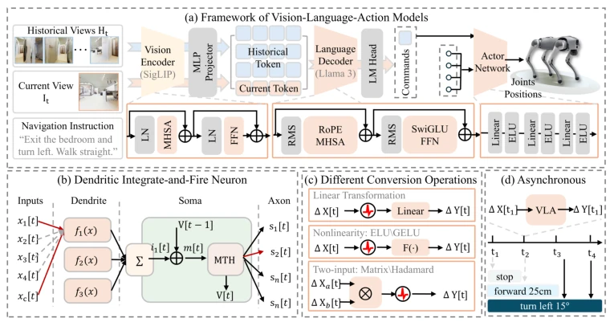
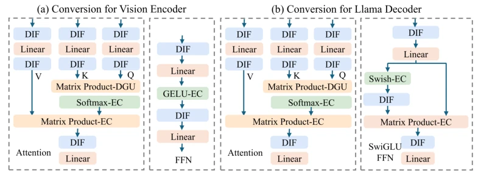
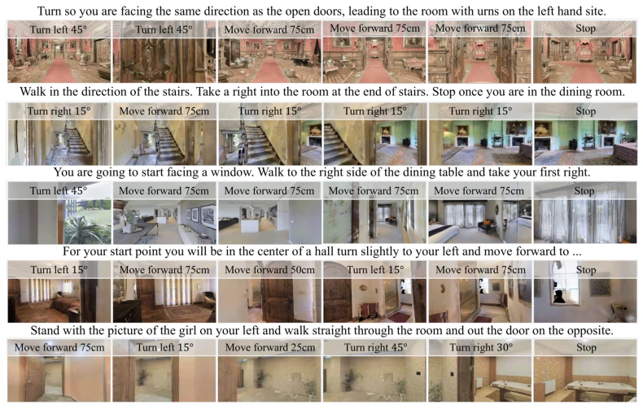
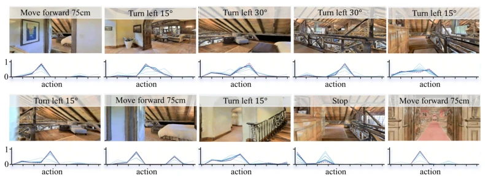

This paper equips VLA models with a 'pulse' filter, attempting to save power and accelerate speed via ANN-to-SNN conversion. However, honestly, conversion without training is prone to failure, especially when channel activation is uneven. The authors devised DIF neurons, effectively mastering dendritic mixing, and implemented asynchronous execution to prevent visual, language, and action components from queuing. The results are indeed fast, with TTFA reduced by 11 times, but how much energy is saved? The hardware details are not specified. It counts as a patch for VLA deployment, but there is still a distance from true neuromorphic hardware. Existing methods often require numerous timesteps to maintain performance, leading to high inference latency. This work attempts to find a balance between accuracy and latency; although asynchronous execution is attractive, actual deployment depends on hardware support.
研究动机Motivation
VLA 模型虽然强，但计算开销大，机器人跑不动 (Brohan et al., 2023)。SNN 虽稀疏，但训练难 (Wu et al., 2018)。转换法虽好，但现有方法 (Song et al., 2026) 需要很多 timesteps 保精度，导致延迟高。而且 VLA 各组件激活分布不均，通道异常值多，转换误差大。时间步长不一致还导致同步等待，浪费算力。具体说，Vision 和 Language 分支的 temporal horizons 不同，下游必须等上游，产生 idle periods。这限制了实时闭环交互，必须解决 activation outliers 和 synchronization stalls 这两个瓶颈。
Although VLA models are powerful, their computational overhead is large, making them difficult for robots to run (Brohan et al., 2023). SNNs are sparse but training is difficult (Wu et al., 2018). While conversion methods are beneficial, existing methods (Song et al., 2026) require many timesteps to maintain accuracy, leading to high latency. Moreover, VLA component activation distributions are uneven, with many channel outliers and large conversion errors. Inconsistent timesteps also cause synchronous waiting, wasting computational resources. Specifically, the Vision and Language branches have different temporal horizons; the downstream must wait for the upstream, creating idle periods. This limits real-time closed-loop interaction, necessitating the resolution of two bottlenecks: activation outliers and synchronization stalls.

Figure 1: (a) Pronounced activation outliers across VLA components increase spike encoding errors at limited timesteps, degrading conversion accuracy. (b) Non-uniform temporal horizons across components introduce synchronization stalls and idle periods, increasing inference latency.
The core lies in DIF neurons and asynchronous execution. DIF redistributes channel responses through dendritic mixing to reduce outliers, and employs adaptive somatic firing to adapt to residual distributions. Combined with differential encoding (Huang et al., 2025a), ANN activations are converted into spike increments. The asynchronous mechanism allows downstream components to process intermediate results immediately upon arrival without waiting for the upstream to complete, overlapping time computations. Specifically, the high policy updates navigation instructions first, while the low policy consumes them immediately, forming hierarchical execution. Internally, DIF includes dendritic channel mixing and channel-adaptive somatic firing; the former balances channel scales, while the latter calibrates the firing range. For affine and nonlinear operators, reparameterization and differential forms are adopted respectively to ensure conversion consistency. For multiplicative interactions such as attention mechanisms, differential forms are used to calculate increments, avoiding error accumulation caused by direct conversion.

Figure 4: Performance and Efficiency analysis. (a) Navigation trajectories and action-prediction convergence on the VLN-CE R2R and RxR Val-Unseen splits. (b) Inference-latency comparison, highlighting the reduction achieved by asynchronous spike-based execution.
Evaluated on R2R, RxR, and Isaac. Compared with SpikeVLA and NaVILA. Metrics include SR, SPL, TTFA, NE, OS. SpikingVLA performance at T=8 is close to ANN, with SR/SPL 11.9%/12.6% higher than SpikeVLA. TTFA dropped from 186.1 to 16.7, achieving 11.2x acceleration. Ablation experiments demonstrate that DIF has smaller error than MT neurons. Closed-loop navigation on Isaac also performed well, with SPL improving after visual enhancement. This proves asynchronous execution effectively reduced synchronization overhead, and DIF improved conversion fidelity. Additionally, changes in channel activation distribution were analyzed, showing DIF effectively balanced the impact of extreme channels, reducing representation discrepancy.

Figure 5: (a) Channel-wise activation distribu- tions. (b) Layer-wise conversion discrepancy un- der different simulation timesteps.

Figure 6: Activation redistribution across LLaMA decoder layers.
其他图片Other Figures

Figure 3: (a) Computation flow of the VLA model. (b) DIF neuron with dendritic feature integration and channel-adaptive spike encoding. (c) Differential conversion strategies for different operators. (d) Event-driven inference by accumulating differential responses over timesteps.

Figure 7: Component-wise differential conversion of the vision encoder and LLaMA decoder. (a) Vision encoder with DIF-based conversion of attention and feed-forward operations. (b) LLaMA decoder with RoPE-based attention and SwiGLU. Affine, nonlinear, and multiplicative operators are handled by their corresponding differential formulations.

Figure 8: Representative navigation rollouts of SpikingVLA.

Figure 9: Temporal convergence of action predictions toward the corresponding ANN outputs across internal timesteps, with different inputs exhibiting distinct convergence rates.